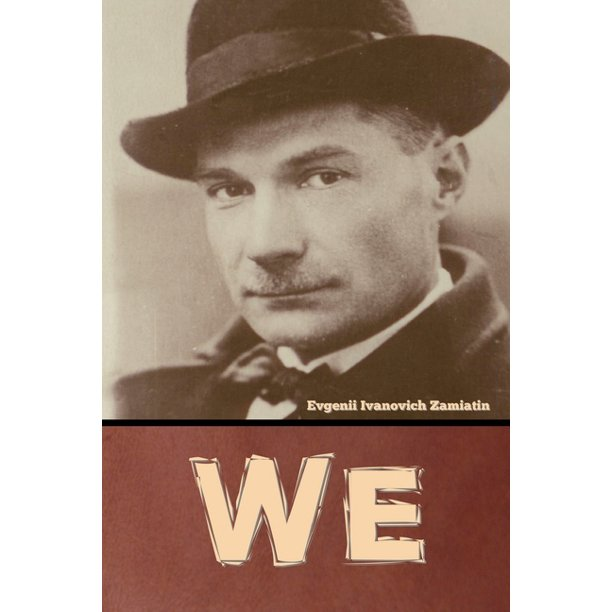

|  |
We by Yevgeny ZamyatinThe exhilarating dystopian novel that inspired George Orwell's 1984 and foreshadowed the worst excesses of Soviet Russia In a glass-enclosed city of absolute straight lines, ruled over by the all-powerful 'Benefactor', the citizens of the totalitarian society of OneState live out lives devoid of passion and creativity - until D-503, a mathematician who dreams in numbers, makes a discovery: he has an individual soul. Set in the twenty-sixth century AD, We is the classic dystopian novel and was the forerunner of works such as George Orwell's 1984 and Aldous Huxley's Brave New World. It was suppressed for many years in Russia and remains a resounding cry for individual freedom, yet is also a powerful, exciting and vivid work of science fiction. Quotes:
|